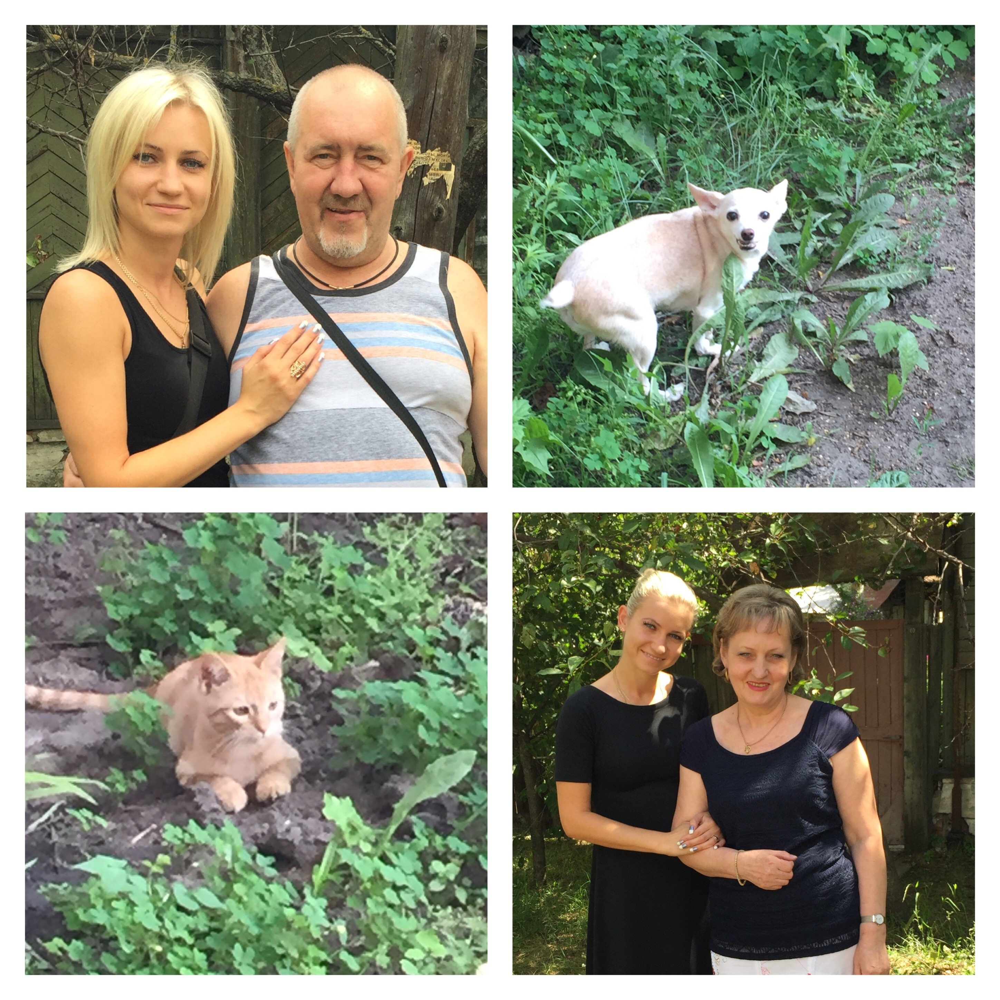

Travelling is another my favorite thing to do. Honestly, for the past 13 years only one place I travel to is my home town in Russia, called Voronezh. My family is still living there, that makes it my favorite place on Earth. Voronezh is a city located near Moscow, and it has the same population as Baltimore, so I do feel like home here:)
